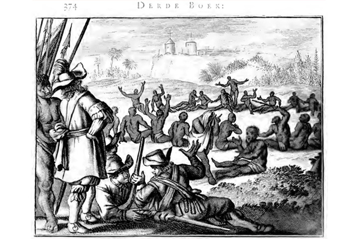
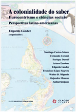

Módulo 4 | Aula 1
Diversidade Cultural, etnocentrismo e protagonismo indígena - Conceitos importantes para garantir a atenção diferenciada
Tópico 3
Etnocentrismo
O etnocentrismo acontece quando um grupo, povo ou nação se vê como mais importante que os demais, ou seja, quando não se respeita o modo de viver de outros grupos, povos ou nações. O etnocentrismo acontece quando avaliamos, julgamos, a partir dos elementos de nossa própria cultura, as formas de vida e de pensamento de outros grupos ou povos.
Quando reconhecemos no nosso grupo que nos vestimos de maneira semelhante, nos pintamos da mesma maneira, comemos da mesma maneira os mesmos alimentos, criamos com aquele grupo uma identidade. Mas ao nos depararmos com um grupo diferente do nosso, é comum estranharmos a forma de agir, de se vestir, falar, de pensar, etc. Assim, criamos mecanismos de diferenciação: passamos a classificar algumas culturas como mais próximas e outras como mais distantes das nossas.
Um exemplo prático disso são os Kaiowá que se acham mais próximos dos Guarani e dos Mbyá do que dos Apinajé. Por sua vez, os Apinajé se acham mais próximos dos Krahô do que dos Xucuru. Fazemos essas comparações e diferenciamos os povos a todo momento e isso não é necessariamente um problema.
O problema está quando essas comparações assumem uma forma extrema, tornam-se uma forma de etnocentrismo que desqualifica práticas diversas de viver e também nega a humanidade e os direitos do outro. Daí a figura do preconceito, da discriminação e do racismo vem à tona e se impõe com manifestações de violência e de opressão. Vemos isso quando um grupo com maior poder político-econômico passa a impor sua vontade e sua cultura a diversos povos.

Colonizadores e nativos. Ilustração da obra de Arnoldus Montanus e Jacob van Meurs, publicada em 1671. Domínio público. In: De Nieuwe en Onbekende Weereld.Fonte: Multirio
Essa prática começou na colonização, na invasão das terras ameríndias, quando países europeus avançaram sobre territórios e buscaram impor suas ideias e seus modos de viver, promovendo uma hierarquização de sua cultura em relação à dos povos indígenas.
movie
Para assistir...
Documentário - Guerra do Brasil, 1.º episódio: As guerras da conquista:
Recomendamos o Documentário - Guerra do Brasil, 1.º episódio: As guerras da conquista para refletir sobre o processo de colonização e as lutas passadas e atuais que os Povos Indígenas enfrentam. Neste documentário, Ailton Krenak fala sobre o problema da colonização.
Fonte: Youtube
Ainda hoje políticas e práticas colonizadoras continuam a afetar a vida de muitos povos, orientadas por um etnocentrismo violento.
headphones
Para escutar...
Podcast “Copiô, Parente”: Racismo é crime, Bolsonaro! Episódio 132.
Neste podcast produzido pelo “Copiô, Parente”, Instituto Socioambiental, discute-se sobre uma fala que expressa racismo no discurso do ex-presidente da República Jair Bolsonaro.
Essa fala é um exemplo de etnocentrismo e antagonismo à diversidade cultural.
Fonte: Youtube
Diante desse cenário de avanço dos colonizadores europeus e disseminação de suas ideias e práticas, os Estados Nacionais foram construídos. Essa construção em territórios não europeus ocorreu através do massacre e da escravização dos povos originários promovidas pelos colonizadores e a subsequente elite econômica.
menu_book
Material complementar
COLONIZAÇÃO E COLONIALIDADE
A colonização é o processo de invasão territorial promovida pelas nações europeias, no final do século XV e início do século XVI, em territórios onde pretendiam explorar recursos e pessoas. Esse processo promoveu o genocídio, a escravização de muitos povos e a destruição de muitas florestas.
Essa forma de dominação não ficou no passado, mas se mantém até hoje com a manutenção e atuação de grupos com poder econômico que continuam avançando sobre territórios e pessoas, com a intenção de dominar diversos povos para mantê-los como força de trabalho e usufruindo de seus territórios.
Alguns autores falam de colonialidade para explicar esse processo onde o mundo foi dividido entre colonizadores e colonizados, onde novas identidades históricas e sociais (brancos, índios e negros) foram construídas e passaram a ser naturalizadas nas relações coloniais de dominação entre europeus e não europeus.

Para aprofundar esse tema, sugerimos a leitura de: QUIJANO, Aníbal. Colonialidade do poder, Eurocentrismo e América Latina. In: A colonialidade do saber: eurocentrismo e ciências sociais. Perspectivas latino-americanas. Buenos Aires: CLACSO, Consejo Latinoamericano de Ciencias Sociales, 2005.
A diversidade cultural sempre foi um problema para as elites que detêm o poder de um país. Os países ou Estados nacionais são uma invenção dessa colonização europeia imposta no mundo todo.
Os Estados que são incapazes de lidar com a diversidade cultural em seu interior, procuram impor uma identidade única, ou seja, querem unificar tudo e ter uma figura de cidadão, uma língua, uma figura de trabalhador, um tipo de família. Assim, pretendem criar um único povo, uma única cultura, em uma única pátria.
As políticas indigenistas de assimilação e integração, vistas anteriormente, são exemplos disso. Para tanto, criam perseguições sistemáticas a outros povos, que expressam a diversidade cultural, com experiências de vida radicalmente contrárias ao sistema econômico, político e social que querem impor. Negam a existência de diversos povos e o direito de se autogovernarem.
Observamos no projeto colonialista, a imposição de uma cultura universalista, neste caso, a europeia, sobre outros povos e suas diversas culturas. A tensão que se forma está na imposição de modos de viver, de pensar e agir e na disputa por terras. Ou seja, o governo representa uma cultura e procura convencer e impor aos diversos povos uma dimensão ética e cívica, uma civilização política, e daí surgem tensões e conflitos.
Portanto, às vezes, as práticas culturais, que discutimos anteriormente, podem não ser apenas aquelas que fazemos a nós mesmos, mas podem ser algo feito a nós, imposto a nós, em especial pelo Estado e as classes dominantes:
Um exemplo é que as escolas em comunidades indígenas, antes da Constituição Federal de 1988, só podiam usar a língua portuguesa; o uso das línguas indígenas era reprimido com violência.
Também foram impostos aos povos indígenas a religião cristã e quaisquer práticas desenvolvidas pelos pajés eram reprimidas.
Hoje, por exemplo, os partos de crianças indígenas estão acontecendo cada vez mais em hospitais e as práticas de parto nas comunidades estão sendo desencorajadas e tidas como perigosas para a vida do bebê e da mãe.
Todas essas ações que apresentam um olhar ainda colonizador sobre a vida indígena são práticas etnocêntricas, que acham que o modo de viver do não indígena é melhor que os modos de viver dos povos indígenas.
Mas, há movimentos de resistência e reversão a essas práticas colonizadoras sobre a diversidade indígena. Assim, temos outro conceito importante, o de protagonismo indígena, que atua na mobilização e fortalecimento dos movimentos indígenas, com objetivo de garantir direitos e pôr fim à desigualdade social e à desigualdade em saúde que tanto afeta os povos originários.
BATISTELLA, C. Abordagens contemporâneas do conceito de saúde. In: FONSECA, A. F.; CORBO, A. M. A. (Orgs.). O território e o processo saúde-doença. Rio de Janeiro: EPSJV/Fiocruz, 2007. p. 81-86.
BRASIL. Ministério da Saúde. Secretaria de Gestão do Trabalho e da Educação na Saúde. Departamento de Gestão da Educação na Saúde. Programa de Qualificação de Agentes Indígenas de Saúde (AIS) e Agentes Indígenas de Saneamento (AISAN). Brasília: Ministério da Saúde, 2016.
BRASIL. Ministério da Saúde. Secretaria de Políticas de Saúde. Projeto Promoção da Saúde. As cartas da promoção da saúde. Brasília: Ministério da Saúde, 2002.
BUSS, P. M. Promoção da saúde e qualidade de vida. Ciência & Saúde Coletiva, v. 5, n. 1, p. 163-177, 2000.
PAIM, J. O que é o SUS? Rio de janeiro: Fiocruz, 2009.
PONTE, C. F.; FALLEIROS, I. (Orgs.). Na corda bamba de sombrinha: a saúde no fio da história. Rio de Janeiro: Fiocruz/COC; Fiocruz/EPSJV, 2010.
SILVA, C. M. da C. et al. Educação em saúde: uma reflexão histórica de suas práticas. Ciência & Saúde Coletiva, v. 15, n. 5, p. 2539-2550, 2010.
Cruz, F. S. M. 2022. Letalidade branca: Negacionismo, violência anti-indígena e as políticas de genocídio. Tese de Doutorado em Antropologia Social, PPGAS, Universidade de Brasília.
Lima, A. C. de S. 1995. Um grande cerco de paz: Poder tutelar, indianidade e formação do Estado no Brasil. Petrópolis: Vozes.
Luciano, G. 2006. O índio brasileiro: o que você precisa saber sobre os povos indígenas no Brasil de hoje (Coleção Educação Para Todos. Série Vias dos Saberes). Brasília: MEC/SECAD; LACED/Museu Nacional.
Oliveira Filho, J. P. 2016. O nascimento do Brasil e outros ensaios: "pacificação", regime tutelar e formação de alteridades. Rio de Janeiro: Contra Capa.
Créditos
Ministério da Saúde
Nísia Trindade Lima
Ministro
Fundação Oswaldo Cruz – Fiocruz
Mario Moreira
Presidente
Cristiani Vieira Machado
Vice-Presidência de Educação, Informação e Comunicação (VPEIC)
Coordenação Geral
Raquel P. Dias Scopel
Cientista Social. Doutora em Antropologia Social. Pesquisadora em Saúde Pública na Fundação Oswaldo Cruz, Escritório Técnico Mato Grosso do Sul. Integrante do INCT Brasil Plural e do Comitê Pró-Equidade de Gênero e Raça da FIOCRUZ.
Rui Arantes
Odontólogo, Doutor em Saúde Pública, Professor e Pesquisador Titular do Departamento de Endemias da Escola Nacional de Saúde Pública Sérgio Arouca (ENSP/FIOCRUZ).
Coordenação Acadêmica
Raquel P. Dias Scopel
Cientista Social. Doutora em Antropologia Social. Pesquisadora em Saúde Pública na Fundação Oswaldo Cruz, Escritório Técnico Mato Grosso do Sul. Integrante do INCT Brasil Plural e do Comitê Pró-Equidade de Gênero e Raça da FIOCRUZ.
Rui Arantes
Odontólogo. Doutor em Saúde Pública. Professor e Pesquisador Titular do Departamento de Endemias da Escola Nacional de Saúde Pública Sérgio Arouca -ENSP/FIOCRUZ.
Ana Lúcia Pontes
Médica Sanitarista. Doutora em Saúde Pública. Pesquisadora do Grupo "Saúde, Epidemiologia e Antropologia dos Povos Indígenas" da -ENSP/FIOCRUZ.
Conteudistas
Ana Lúcia Pontes
Médica Sanitarista. Doutora em Saúde Pública. Pesquisadora do Grupo "Saúde, Epidemiologia e Antropologia dos Povos Indígenas" da -ENSP/FIOCRUZ.
César Augusto Paro
Sanitarista. Educador Popular em Saúde. Doutor em Saúde Coletiva. Professor da Unifesspa. Integrante do Laboratório Interdisciplinar de Direitos Humanos e Saúde/UFRJ.
Felipe Tuxá
Antropólogo. Cientista Social. Doutor em Antropologia Social pela Universidade de Brasília. Docente da Universidade Federal da Bahia e membro permanente do Programa de Pós-Graduação em Antropologia Social da mesma instituição.
Yupuri ou João Paulo Lima Barreto
Indígena do povo Yepamahsã (Tukano), nascido na aldeia São Domingos, município de São Gabriel da Cachoeira, AM. Filósofo. Doutor em Antropologia Social. Fundador do Centro de Medicina Indígena Bahserikowi e da Casa de Comida Indígena – Biatuwi. Pesquisador do Núcleo de Estudos da Amazônia Indígena (NEAI). Membro do SPA - Science Panel for the Amazon (Painel Científico para a Amazônia), da Academia Brasileira de Ciência. Membro do Comitê Científico SoU_Ciência. Membro da OTCA - Organización del Tratado de Cooperación Amazônica. Coordenador do Fórum Povos da Rede Unida. Professor. Consultor.
Luís Octavio Gomes de Souza
Cientista social formado pela Universidade Federal Fluminense (UFF). Pesquisador e redator freelancer em História do Brasil e História da Saúde Pública no Brasil.
Lucas Luis de Faria
Psicólogo. Trabalhador do Sistema Socioeducativo de Minas Gerais. Doutorando em Psicologia Social pela UFMG. Professor de Psicologia da Faculdade Pitágoras (Belo Horizonte).
Marcos Sabaru
Liderança Indígena Tingui-Botó, nascido na aldeia Olho d'Água do Meio, município de Feira Grande – AL. Técnico viveirista. Articulador Político da Organização Indígena Apoinme. Mobilizador de Saúde e Consultor em Política Nacional de Gestão Territorial e Ambiental de Terras Indígenas.
Mariana Pereira da Silva
Antropóloga. Doutoranda em Antropologia Social (UnB). Mestre em Antropologia Social (UFGD). Antropóloga e Associada na Rede de Apoio e Incentivo Socioambiental (RAIS).
Nayara Scalco
Bióloga. Especialista em Saúde Indígena. Doutora em Saúde Pública. Pós Doutoranda no ILMD/Fiocruz Amazônia e membro da GT Saúde Indígena na Abrasco.
Paulino Montejo Silvestre
Maya-Potí, da Guatemala. Licenciado em Filosofia pela Universidade La Salle - México/Guatemala. Diplomado em Planejamento de Projetos pela União Internacional de Telecomunicações (UIT) e Fundo para o Desenvolvimento dos Povos Indígenas da América Latina e do Caribe. Especialização Lato Sensu em Gestão em Etnodesenvolvimento pelo Departamento de Antropologia/Museu Nacional-Universidade Federal do Rio de Janeiro (UFRJ) e Departamento de Ciências Sociais/Instituto de Ciências Humanas e Letras, da Universidade Federal do Amazonas (Ufam).Professor de História e Jornalista, Universidad del Valle de Guatemala. Fundador e assessor político e parlamentar da Articulação dos Povos Indígenas do Brasil (Apib).
Raquel P. Dias Scopel
Cientista Social. Doutora em Antropologia Social. Pesquisadora em Saúde Pública na Fundação Oswaldo Cruz, Escritório Técnico Mato Grosso do Sul. Integrante do INCT Brasil Plural e do Comitê Pró-Equidade de Gênero e Raça da FIOCRUZ.
Sílvia Guimarães
Antropóloga. Doutora em Antropologia. Professora do Departamento de Antropologia da Universidade de Brasília. Coordenadora do Laboratório Matula-Sociabilidades, Diferenças e Desigualdades (PPGAS/UnB).
Verônica Gronau Luz
Nutricionista. Mestre e Doutora em Saúde Coletiva. Professora e pesquisadora da Faculdade de Ciências da Saúde, Universidade Federal da Grande Dourados (UFGD) e da Residência Multiprofissional em Saúde com ênfase em Saúde Indígena, do Hospital Universitário da UFGD.
Participação
Daniel Scopel
Antropólogo. Doutor em Antropologia Social pela Universidade Federal de Santa Cataria. Pesquisador colaborador do INCT Brasil Plural na rede saúde: práticas locais, experiências e políticas públicas.
Grasiele Nespoli
Psicóloga e Sanitarista. Doutora em Educação em Ciências e Saúde. Pesquisadora e Professora da Escola Politécnica de Saúde Joaquim Venâncio. Integrante do Grupo Temático de Educação Popular e Saúde da ABRASCO.
Maurício Soares Leite
Nutricionista. Sanitarista. Doutor em Saúde Pública. Membro do GT de Saúde Indígena/ ABRASCO. Departamento de Nutrição, Universidade Federal de Santa Catarina.
Voia Pedro Uvanheku
Indígena do povo Laklãnõ/xokleng. Nascido na aldeia Sede, município de José Boiteux, SC. Graduando no Curso de Medicina (UFSC). Técnico em Telefonia Fixa (Master Treinamentos).